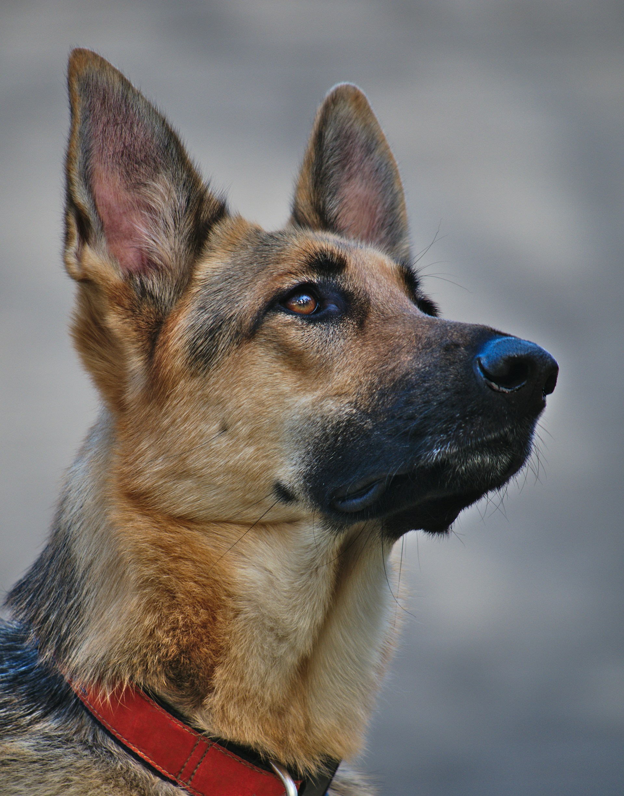
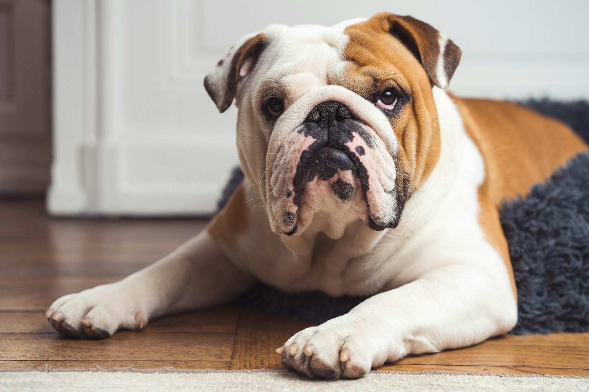

German shepherds
German shepherds are a large breed dog with a beautiful fluffy browna nd black coat. German Shepherds are the steriotrypical protective energetic dog. Often you will see these dogs as police dogs or K9s that work along side the law enforcement. They match this lifestyle of fighting crime due to their incredible agility, high speeds, stamina, and overall loyalty and protectiveness. You will find most German Shepherds as police dogs, there are also the companion german shepherds which are equally as loyal. German shepherds in a house as a pet are extreme cuddle bugs who still love to get their energy out by exercise. Although these dogs are cuddly they will not hesitate to protect their owners due to their protective nature. Overall, these immaculate dogs can be anything from police dogs to couch potatoes.

English Bulldogs
On the subject of couch potatoes, let's talk about my favorite dog breed. The english bulldog, this breed is known for how lazy it is and stubbornness. You will usually find these dogs asleep somewhere most hours of the day. And be prepared when they breath it sounds like they are suffocating due to their short nose and underbites. These dogs are chunky goofballs who will lay arounf with you all day given the chance. Unlike most breeds, no english bulldog looks the same, they come in any color ranging from brown, white, grey, black, and merle. They may not all look the same but it is guranteed that all of them are lazy. So if you are looking for a cuddle buddy maybe give an english bulldog a look.

- dog breeds
- german shepherd
- English bulldog
- lazy dogs